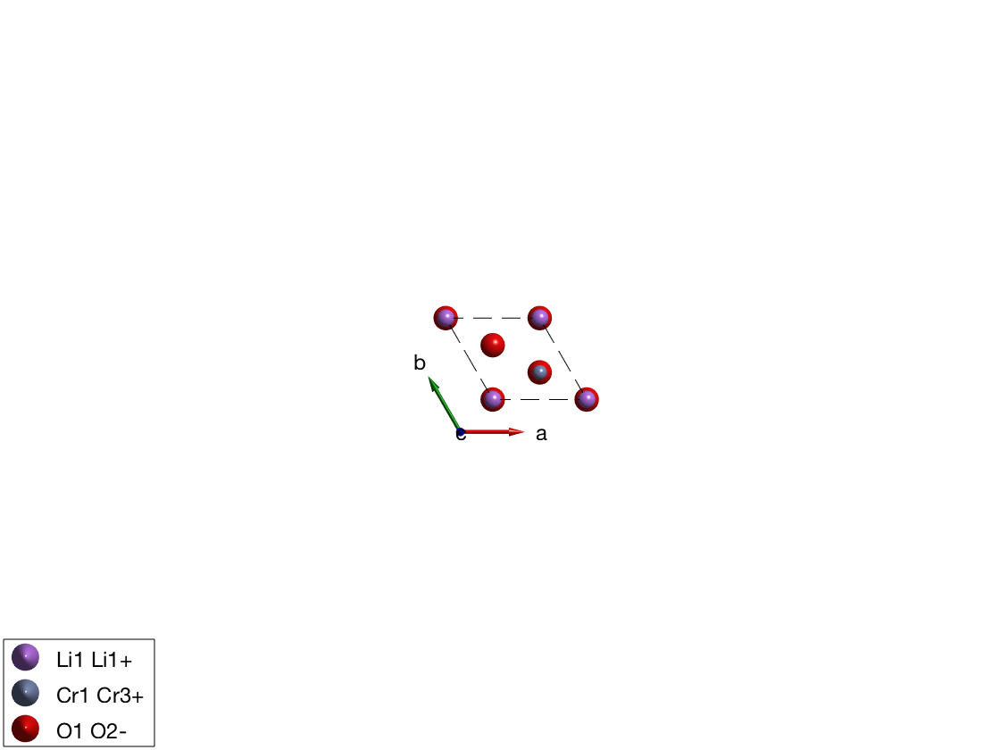
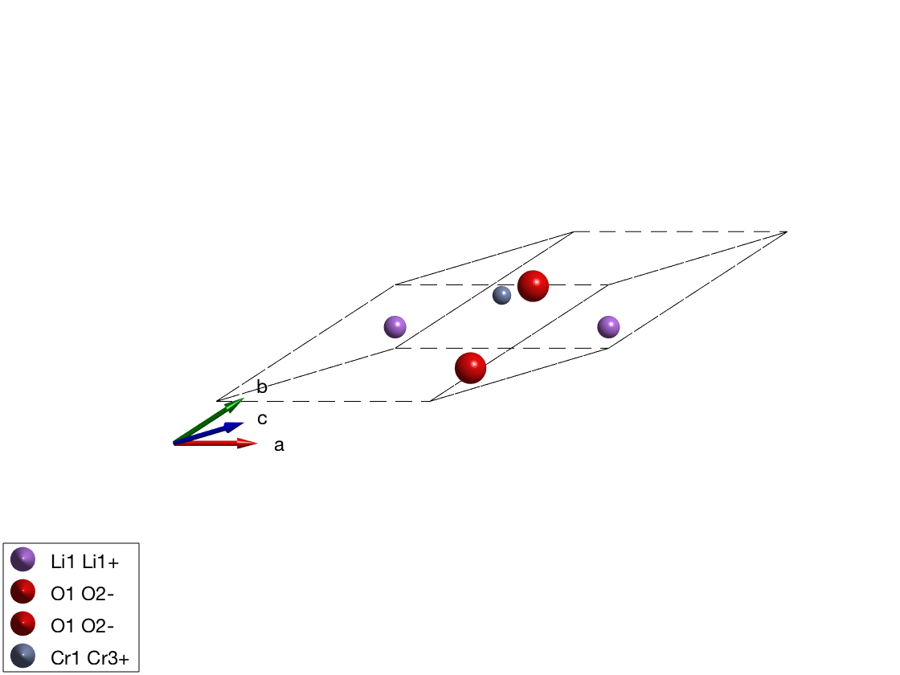
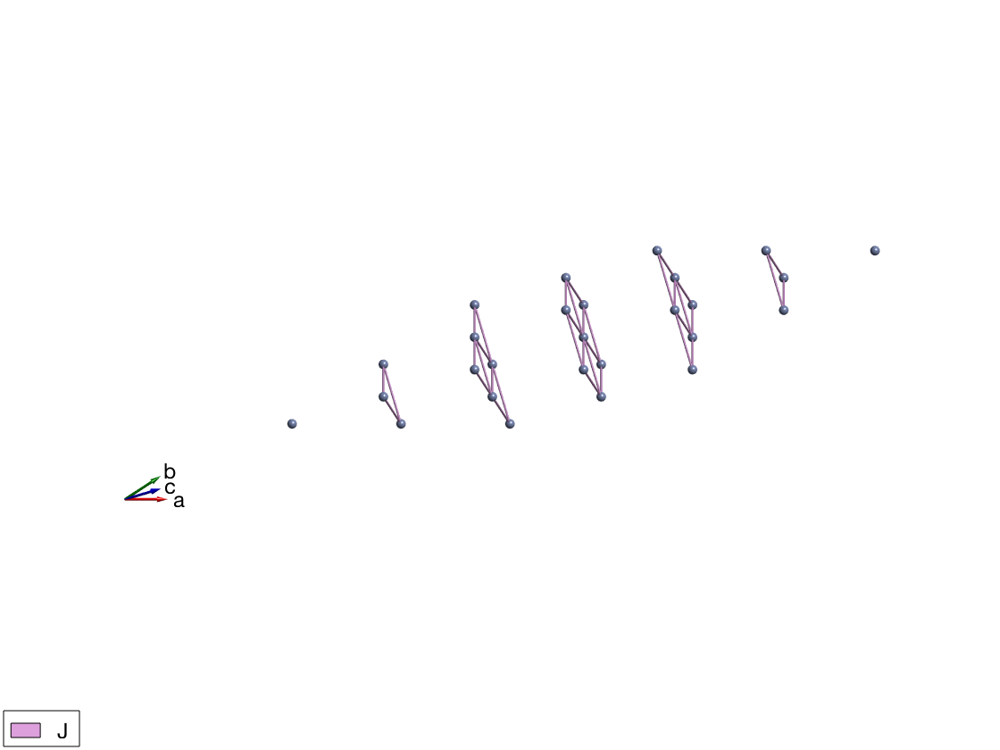
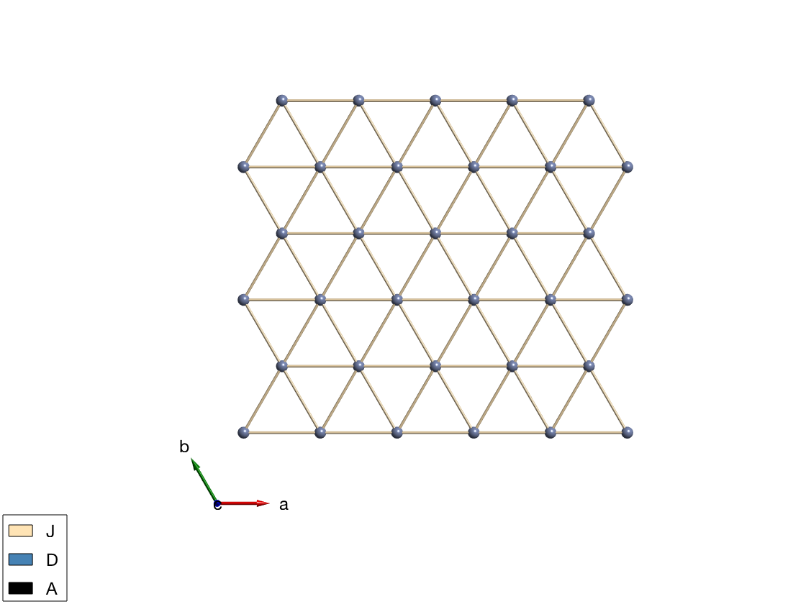
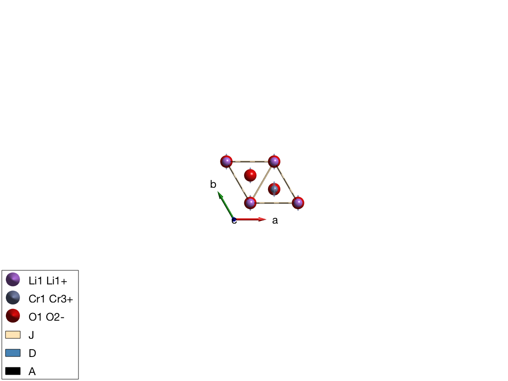
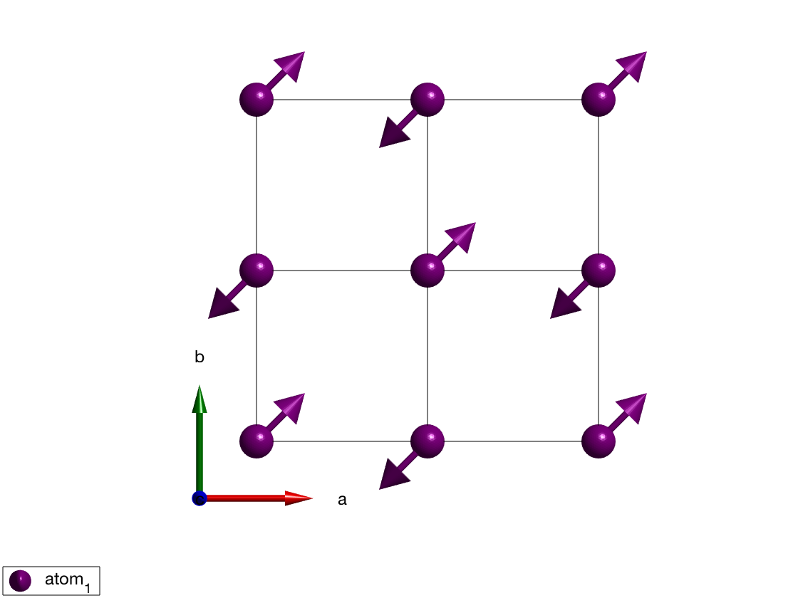
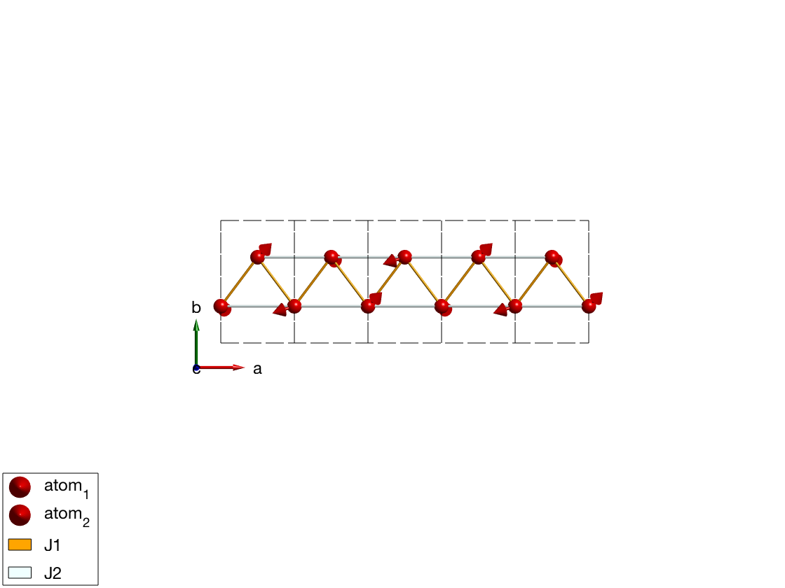
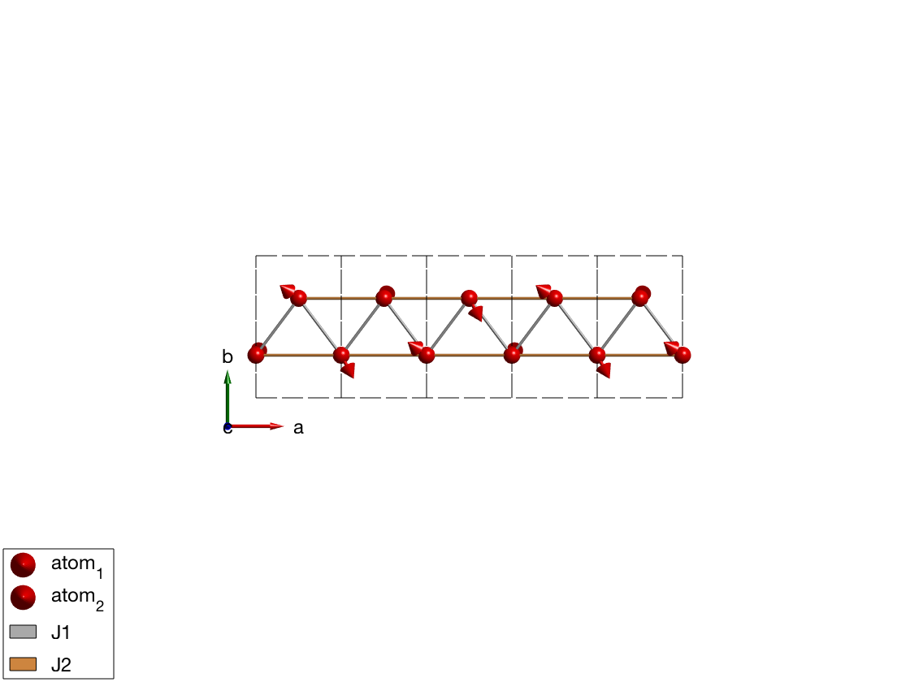

Contents
- Internal data structure of SpinW
- Check out internal data structure of SpinW
- Test cordinate transformations
- Rotate a vector
- Magnetic atoms
- Space groups
- Bond symmetry
- Lets do something crazy
- Lets add a few matrices
- Lets add some matrices and plot
- Plot a single triangular layer from LiCrO2
- Single ion properties
- Magnetic structure
- Rotating frame representation
- Let's do some animation by rotating the moments
- Check the spin wave dispersion
- Case when the rotating frame representation fails
Internal data structure of SpinW
Import the LiCrO2 crystal structure from a web link. It has space group R-3m, rhombohedrl crystal structure in hexagonal settings. What is the density? Where does all the data comes from? edit atom.dat
licro = spinw('https://goo.gl/do6oTh');
licro.formula
Check out internal data structure of SpinW
What do you see?
properties(spinw) licro.lattice
Properties for class spinw:
lattice
unit_cell
twin
matrix
single_ion
coupling
mag_str
unit
cache
ans =
struct with fields:
angle: [1.5708 1.5708 2.0944]
lat_const: [2.9010 2.9010 14.4311]
sym: [3×4×36 double]
origin: [0 0 0]
label: 'R -3 m H'
Test cordinate transformations
Convert (1,1,0) in the reciprocal lattice of LiCrO2 to A^-1 and convert (1,0,0) in lattice units to the crystal Descartes coordinate system (denoted by xyz in SpinW).
How are Trl and Tr related?
Trl = licro.rl; Q = [0 1 0]; QinvA = Q*Trl Tl = licro.basisvector; pos = [1;0;0]; RA = Tl*pos
QinvA =
0 2.5009 -0.0000
RA =
2.9010
0
0
Rotate a vector
Using the rotation axis and Rotation angle in degree, the sw_rotmatd can generate the corresponding rotation matrix.
R = sw_rotmatd([0 0 1],60);
% Rotate polar vector
R*pos
ans =
0.5000
0.8660
0
Magnetic atoms
Can you find the magnetic atom positions on the plot and connect them to the list in mAtom and in licro.unit_cell?
plot(licro) mAtom = licro.matom
mAtom =
struct with fields:
r: [3×3 double]
idx: [2 2 2]
S: [1.5000 1.5000 1.5000]
 Space groups
Check out symmetry.dat: What does it mean P0~=P1? In case P0 the equivalent bonds are determined based on length, while for P1 (or any other space group), the equivalent bonds are determined based on the symmetry operators.
edit symmetry.dat
Bond symmetry
Generate the bond list of LiCrO2. Are the bonds generated usign the space group? What does it mean?
licro.gencoupling % The first neighbor bonds licro.table('bond',1)
ans =
bond dl length matom1 idx1 matom2 idx2 matrix
____ ______________ ______ __________ ____ __________ ____ ______________
1 -1 -1 0 2.901 'Cr1 Cr3+' 2 'Cr1 Cr3+' 2 '' '' ''
1 0 1 0 2.901 'Cr1 Cr3+' 2 'Cr1 Cr3+' 2 '' '' ''
1 1 0 0 2.901 'Cr1 Cr3+' 2 'Cr1 Cr3+' 2 '' '' ''
1 1 1 0 2.901 'Cr1 Cr3+' 3 'Cr1 Cr3+' 3 '' '' ''
1 0 -1 0 2.901 'Cr1 Cr3+' 3 'Cr1 Cr3+' 3 '' '' ''
1 -1 0 0 2.901 'Cr1 Cr3+' 3 'Cr1 Cr3+' 3 '' '' ''
1 1 1 0 2.901 'Cr1 Cr3+' 1 'Cr1 Cr3+' 1 '' '' ''
1 0 -1 0 2.901 'Cr1 Cr3+' 1 'Cr1 Cr3+' 1 '' '' ''
1 -1 0 0 2.901 'Cr1 Cr3+' 1 'Cr1 Cr3+' 1 '' '' ''
Lets do something crazy
Lets convert the hexagonal cell to the primitive cell and see what happens.
Why copy()? The spinw object is handle object, the copy() command creates a hard copy to avoid modifying the original object. Check spinw.formula() to see how much the new cell is smaller
licroR = copy(licro);
T = licroR.newcell({[-1 1 1]/3 [2 1 1]/3 [-1 -2 1]/3})
plot(licroR,'cellMode','outside')
swplot.zoom(1.5)
T =
-0.3333 0.6667 -0.3333
0.3333 0.3333 -0.6667
0.3333 0.3333 0.3333
 Lets add a few matrices
What does the different input do? Check the result by inspecting the licro.matrix.mat array.
licro.addmatrix('label','J','value',1) licro.addmatrix('label','D','value',[0 1 0]) licro.addmatrix('label','A','value',diag([1 0.5 0.5]))
Lets add some matrices and plot
Do both for the primitive and the hexagonal cell Are they the same?
licroR.gencoupling licroR.addmatrix('label','J','value',1) licroR.addcoupling('bond',1,'mat','J') plot(licroR,'range',[3 3 3],'unit','lu','atomMode','mag','cellMode','none','atomLegend',false) swplot.zoom(1.5)
Plot a single triangular layer from LiCrO2
licro.addcoupling('bond',1,'mat','J') plot(licro,'range',[15 15 5],'unit','xyz','atomMode','mag','cellMode','none','atomLegend',false)
Single ion properties
Assing the A matrix to single ion anisotropy.
licro.addaniso('A')
plot(licro)
 Magnetic structure
Lets start with a simpler lattice: square lattice. Define a (1/2,1/2,0) magnetic structure using complex magnetization vectors.
What does [1-1i;1+1i;0] vector means? These are the complex magnetization vectors. SpinW 3.0 stores complex magnetization vectors internally and generates the real magnetic structure on the fly.
How is this stored in the spinw object? check spinw.mag_str and check spinw.magstr for the generated real structure.
Let's create a magnetic supercell! 2x2x1 cell What will be the k-vector now? (1/2,1/2,0) or (1,1,0)? They are indeed equivalent.
To check that we are doing the right thing, we will keep track of the enrgy of the system, after adding a J=1 meV Heisenberg exchange on the square lattice. To create Heisenberg Hamiltonian quickly we use square.quickham(1.25), to create the first neighbor bonds with J=1.25 meV.
What was the energy/spin for the original magnetic structure? S=1, J = 1.25 meV?
square = sw_model('squareAF'); plot(square,'range',[2 2 1/2]) square.genmagstr('mode','direct','S',[1-1i;1+1i;0],'k',[1/2 1/2 0],'nExt',[1 1 1]) plot(square,'range',[2 2 1/2]) square.quickham(1) square.energy % Create supercell, which k-vector is right? k is always in the units of % the crystal reciprocal lattice! square.genmagstr('mode','direct','S',[1 -1 -1 1;0 0 0 0;0 0 0 0],'nExt',[2 2 1],'k',[0 0 0]) square.energy square.genmagstr('mode','direct','S',[1 -1 -1 1;0 0 0 0;0 0 0 0],'nExt',[2 2 1],'k',[1/2 1/2 0]) square.energy
Preparing 'squareAF' model ... Creating the bond list (maxDistance = 10 Å, nCell = 4x4x2)... ...27 bonds are retained out of 225 generated! ... ready! Creating 3D plot... ...14k faces and 7k vertices are drawn! Creating 3D plot... ...16k faces and 8k vertices are drawn! Ground state energy: -2.000 meV/spin. Ground state energy: -2.000 meV/spin. Ground state energy: -2.000 meV/spin.
Rotating frame representation
Let's generate a spiral using the J1-J2 model of a zig-zag chain. Check the spinw.mag_str and spinw.magstr and compare them.
ch = spinw; ch.genlattice('lat_const',[3 5 4]) ch.addatom('r',[0 .3 0],'S',1) ch.addatom('r',[1/2 0.7 0],'S',1) ch.quickham([1 1/2]) ch.optmagk ch.optmagsteep ch.energy plot(ch,'range',[5 1 1/2])
ans =
struct with fields:
k: [3×1 double]
E: -0.7500
F: [3×2 double]
stat: [1×1 struct]
Warning: Some spins are coupled to themselves in the present magnetic cell!
Ground state energy: -0.750 meV/spin.
 Let's do some animation by rotating the moments
for ii = 1:100 ch.genmagstr('mode','rotate','n',[0 0 1],'phid',1) swplot.plotmag('range',[5 1 1/2]) drawnow end
Check the spin wave dispersion
spec = ch.spinwave({[0 0 0] [1 0 0] 501});
spec = sw_egrid(spec);
spec = sw_instrument(spec,'dE',0.1);
figure
sw_plotspec(spec,'mode','color')
legend off
% Plot the neutron scattering cross section per spin wave mode.
figure
spec = sw_omegasum(spec,'zeroint',1e-5,'tol',1e-3);
sw_plotspec(spec,'mode','int','axLim',[0 5],'colormap',[0 0 0])
Error using sw_egrid (line 345) The imaginary part of the spin wave energes is larger than the bin size! Improve your calculation or disable imagChk option! Error in tutorial31 (line 184) spec = sw_egrid(spec);
Case when the rotating frame representation fails
We show here what happens when there are counterrotating spirals.
ch = spinw; ch.genlattice('lat_const',[3 7 4]) ch.addatom('r',[1/2 1/4 0],'S',1) ch.addatom('r',[1/2 3/4 0],'S',1) ch.addmatrix('label','DM1','value',[0 1 0]) ch.addmatrix('label','DM2','value',[0 -1 0]) ch.gencoupling ch.addcoupling('mat','DM1','bond',1,'subIdx',1) ch.addcoupling('mat','DM2','bond',1,'subIdx',2) optRes = ch.optmagk; plot(ch,'range',[5 1 1/2]) % Rotating frame representation fails! ch.magstr % Lets check how the structure would look like in a magnetic supercell. ch.magstr('nExt',[4 1 1]) % Let's generate this supercell and keep it. ch.genmagstr('mode','helical','nExt',[4 1 1]) % Let's check the energy if we are right, -1 meV/spin looks fine. ch.energy